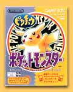

|
|  |
1998年9月12日発売
3,000円（税別）
ジャンル：ＲＰＧ
 1995,1996,1998 Nintendo/Creatures inc./GAME FREAK inc. 1995,1996,1998 Nintendo/Creatures inc./GAME FREAK inc.
|
 ポケットモンスターの人気キャラクター、ピカチュウを連れて歩くことができるソフト。ゲームのルールは「赤」「緑」と同じだが、ピカチュウが主人公の後ろをチョコチョコとついて歩くのが最大の特徴。連れて歩いているときにボタンを押すと、ピカチュウの表情を見ることもできて、ごきげんがわかるのだ。ポケモンの出現率も「赤」「緑」「青」とは異なる。また、ポケモンのイラストと図鑑の解説文がかきなおされているほか、新しい対戦場「コロシアム２」が登場。 ポケットモンスターの人気キャラクター、ピカチュウを連れて歩くことができるソフト。ゲームのルールは「赤」「緑」と同じだが、ピカチュウが主人公の後ろをチョコチョコとついて歩くのが最大の特徴。連れて歩いているときにボタンを押すと、ピカチュウの表情を見ることもできて、ごきげんがわかるのだ。ポケモンの出現率も「赤」「緑」「青」とは異なる。また、ポケモンのイラストと図鑑の解説文がかきなおされているほか、新しい対戦場「コロシアム２」が登場。
注：海外版のポケットモンスターとの交換・対戦はデータが破損しますので行わないで下さい
|
|
|